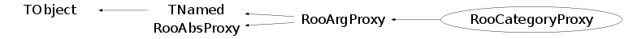

class RooCategoryProxy: public RooArgProxy
RooCategoryProxy is the proxy implementation for RooAbsCategory objects A RooCategoryProxy is the general mechanism to store references to RooAbsCategoriess inside a RooAbsArg RooCategoryProxy provides a cast operator to Int_t and 'const char*', allowing the proxy to functions a Int_t/'const char*' on the right hand side of expressions.
Function Members (Methods)
public:
| RooCategoryProxy() | |
| RooCategoryProxy(const RooCategoryProxy&) | |
| RooCategoryProxy(const char* name, RooAbsArg* owner, const RooCategoryProxy& other) | |
| RooCategoryProxy(const char* name, const char* desc, RooAbsArg* owner, Bool_t valueServer = kTRUE, Bool_t shapeServer = kFALSE, Bool_t proxyOwnsArg = kFALSE) | |
| RooCategoryProxy(const char* name, const char* desc, RooAbsArg* owner, RooAbsCategory& ref, Bool_t valueServer = kTRUE, Bool_t shapeServer = kFALSE, Bool_t proxyOwnsArg = kFALSE) | |
| virtual | ~RooCategoryProxy() |
| RooAbsArg* | RooArgProxy::absArg() const |
| void | TObject::AbstractMethod(const char* method) const |
| virtual void | TObject::AppendPad(Option_t* option = "") |
| const RooAbsCategory& | arg() const |
| virtual void | TObject::Browse(TBrowser* b) |
| static TClass* | Class() |
| virtual const char* | TObject::ClassName() const |
| virtual void | TNamed::Clear(Option_t* option = "") |
| virtual TObject* | Clone(const char* newName = 0) const |
| virtual Int_t | TNamed::Compare(const TObject* obj) const |
| virtual void | TNamed::Copy(TObject& named) const |
| virtual void | TObject::Delete(Option_t* option = "")MENU |
| virtual Int_t | TObject::DistancetoPrimitive(Int_t px, Int_t py) |
| virtual void | TObject::Draw(Option_t* option = "") |
| virtual void | TObject::DrawClass() constMENU |
| virtual TObject* | TObject::DrawClone(Option_t* option = "") constMENU |
| virtual void | TObject::Dump() constMENU |
| virtual void | TObject::Error(const char* method, const char* msgfmt) const |
| virtual void | TObject::Execute(const char* method, const char* params, Int_t* error = 0) |
| virtual void | TObject::Execute(TMethod* method, TObjArray* params, Int_t* error = 0) |
| virtual void | TObject::ExecuteEvent(Int_t event, Int_t px, Int_t py) |
| virtual void | TObject::Fatal(const char* method, const char* msgfmt) const |
| virtual void | TNamed::FillBuffer(char*& buffer) |
| virtual TObject* | TObject::FindObject(const char* name) const |
| virtual TObject* | TObject::FindObject(const TObject* obj) const |
| virtual Option_t* | TObject::GetDrawOption() const |
| static Long_t | TObject::GetDtorOnly() |
| virtual const char* | TObject::GetIconName() const |
| virtual const char* | TNamed::GetName() const |
| virtual char* | TObject::GetObjectInfo(Int_t px, Int_t py) const |
| static Bool_t | TObject::GetObjectStat() |
| virtual Option_t* | TObject::GetOption() const |
| virtual const char* | TNamed::GetTitle() const |
| virtual UInt_t | TObject::GetUniqueID() const |
| virtual Bool_t | TObject::HandleTimer(TTimer* timer) |
| virtual ULong_t | TNamed::Hash() const |
| Bool_t | hasRange(const char* rangeName) const |
| virtual void | TObject::Info(const char* method, const char* msgfmt) const |
| virtual Bool_t | TObject::InheritsFrom(const char* classname) const |
| virtual Bool_t | TObject::InheritsFrom(const TClass* cl) const |
| virtual void | TObject::Inspect() constMENU |
| void | TObject::InvertBit(UInt_t f) |
| virtual TClass* | IsA() const |
| virtual Bool_t | TObject::IsEqual(const TObject* obj) const |
| virtual Bool_t | TObject::IsFolder() const |
| Bool_t | TObject::IsOnHeap() const |
| virtual Bool_t | TNamed::IsSortable() const |
| Bool_t | TObject::IsZombie() const |
| const char* | label() const |
| virtual void | TNamed::ls(Option_t* option = "") const |
| void | TObject::MayNotUse(const char* method) const |
| virtual const char* | RooArgProxy::name() const |
| virtual Bool_t | TObject::Notify() |
| const RooArgSet* | RooAbsProxy::nset() const |
| void | TObject::Obsolete(const char* method, const char* asOfVers, const char* removedFromVers) const |
| static void | TObject::operator delete(void* ptr) |
| static void | TObject::operator delete(void* ptr, void* vp) |
| static void | TObject::operator delete[](void* ptr) |
| static void | TObject::operator delete[](void* ptr, void* vp) |
| Int_t | operator Int_t() const |
| void* | TObject::operator new(size_t sz) |
| void* | TObject::operator new(size_t sz, void* vp) |
| void* | TObject::operator new[](size_t sz) |
| void* | TObject::operator new[](size_t sz, void* vp) |
| RooCategoryProxy& | operator=(Int_t index) |
| RooCategoryProxy& | operator=(const char* _label) |
| RooCategoryProxy& | operator=(const RooCategoryProxy&) |
| virtual void | TObject::Paint(Option_t* option = "") |
| virtual void | TObject::Pop() |
| virtual void | TNamed::Print(Option_t* option = "") const |
| virtual void | RooArgProxy::print(ostream& os, Bool_t addContents = kFALSE) const |
| virtual Int_t | TObject::Read(const char* name) |
| virtual void | TObject::RecursiveRemove(TObject* obj) |
| void | TObject::ResetBit(UInt_t f) |
| virtual void | TObject::SaveAs(const char* filename = "", Option_t* option = "") constMENU |
| virtual void | TObject::SavePrimitive(ostream& out, Option_t* option = "") |
| virtual Bool_t | setArg(RooAbsCategory& newRef) |
| void | TObject::SetBit(UInt_t f) |
| void | TObject::SetBit(UInt_t f, Bool_t set) |
| virtual void | TObject::SetDrawOption(Option_t* option = "")MENU |
| static void | TObject::SetDtorOnly(void* obj) |
| virtual void | TNamed::SetName(const char* name)MENU |
| virtual void | TNamed::SetNameTitle(const char* name, const char* title) |
| static void | TObject::SetObjectStat(Bool_t stat) |
| virtual void | TNamed::SetTitle(const char* title = "")MENU |
| virtual void | TObject::SetUniqueID(UInt_t uid) |
| virtual void | ShowMembers(TMemberInspector& insp) |
| virtual Int_t | TNamed::Sizeof() const |
| virtual void | Streamer(TBuffer& b) |
| void | StreamerNVirtual(TBuffer& b) |
| virtual void | TObject::SysError(const char* method, const char* msgfmt) const |
| Bool_t | TObject::TestBit(UInt_t f) const |
| Int_t | TObject::TestBits(UInt_t f) const |
| virtual void | TObject::UseCurrentStyle() |
| virtual void | TObject::Warning(const char* method, const char* msgfmt) const |
| virtual Int_t | TObject::Write(const char* name = 0, Int_t option = 0, Int_t bufsize = 0) |
| virtual Int_t | TObject::Write(const char* name = 0, Int_t option = 0, Int_t bufsize = 0) const |
protected:
| virtual void | RooArgProxy::changeDataSet(const RooArgSet* newNormSet) |
| virtual void | RooAbsProxy::changeNormSet(const RooArgSet* newNormSet) |
| virtual Bool_t | RooArgProxy::changePointer(const RooAbsCollection& newServerSet, Bool_t nameChange = kFALSE, Bool_t factoryInitMode = kFALSE) |
| virtual void | TObject::DoError(int level, const char* location, const char* fmt, va_list va) const |
| Bool_t | RooArgProxy::isShapeServer() const |
| Bool_t | RooArgProxy::isValueServer() const |
| RooAbsCategoryLValue* | lvptr() const |
| void | TObject::MakeZombie() |
Data Members
public:
| enum TObject::EStatusBits { | kCanDelete | |
| kMustCleanup | ||
| kObjInCanvas | ||
| kIsReferenced | ||
| kHasUUID | ||
| kCannotPick | ||
| kNoContextMenu | ||
| kInvalidObject | ||
| }; | ||
| enum TObject::[unnamed] { | kIsOnHeap | |
| kNotDeleted | ||
| kZombie | ||
| kBitMask | ||
| kSingleKey | ||
| kOverwrite | ||
| kWriteDelete | ||
| }; |
protected:
| RooAbsArg* | RooArgProxy::_arg | Pointer to content of proxy |
| Bool_t | RooArgProxy::_isFund | If true proxy contains an lvalue |
| RooArgSet* | RooAbsProxy::_nset | ! Normalization set to be used for evaluation of RooAbsPdf contents |
| Bool_t | RooArgProxy::_ownArg | If true proxy owns contents |
| RooAbsArg* | RooArgProxy::_owner | Pointer to owner of proxy |
| Bool_t | RooArgProxy::_shapeServer | If true contents is shape server of owner |
| Bool_t | RooArgProxy::_valueServer | If true contents is value server of owner |
| TString | TNamed::fName | object identifier |
| TString | TNamed::fTitle | object title |
Class Charts
{kind=link}
{kind=link}
{kind=link}
{kind=link}

Function documentation
RooCategoryProxy(const char* name, const char* desc, RooAbsArg* owner, Bool_t valueServer = kTRUE, Bool_t shapeServer = kFALSE, Bool_t proxyOwnsArg = kFALSE)
Constructor with owner and proxied category object
RooCategoryProxy(const char* name, const char* desc, RooAbsArg* owner, RooAbsCategory& ref, Bool_t valueServer = kTRUE, Bool_t shapeServer = kFALSE, Bool_t proxyOwnsArg = kFALSE)
Constructor with owner and proxied category object
RooCategoryProxy(const char* name, RooAbsArg* owner, const RooCategoryProxy& other)
Copy constructor
RooAbsCategoryLValue* lvptr() const
Return RooAbsCategoryLValye pointer of contained object if it is indeed an lvalue
RooCategoryProxy(const char* name, const char* desc, RooAbsArg* owner, Bool_t valueServer = kTRUE, Bool_t shapeServer = kFALSE, Bool_t proxyOwnsArg = kFALSE)
TObject* Clone(const char* newName = 0) const
{ return new RooCategoryProxy(newName,_owner,*this); }